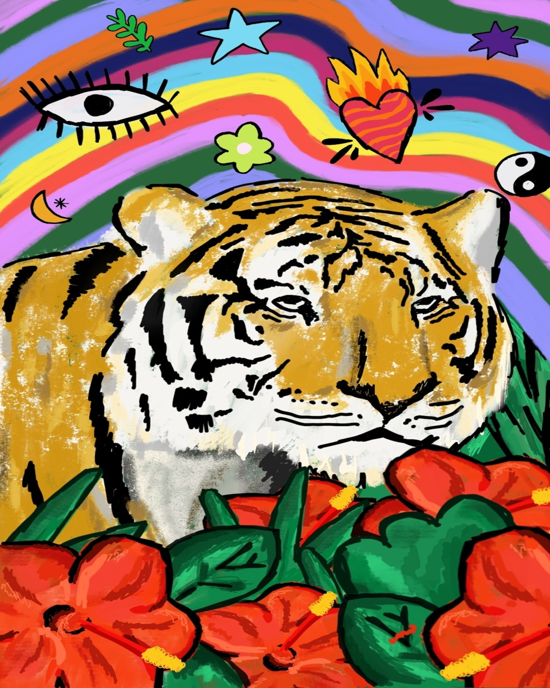

Quien Soy
Cuento con más de seis años de experiencia laboral. Tuve la suerte de crecer, aprender y desarrollar mis habilidades como comunicadora visual, tanto de manera dependiente como autónoma, en distintos rubros y empresas, nacionales como internacionales

Constantemente estoy buscando la posibilidad de capacitarme y aprender. Estoy dispuesta a encarar nuevos desafíos y proyectos
De forma autónoma, me desempeño por sobre todo en el área de branding, diseño de contenido, y desarrollo de estampas únicas y rapports.